5 Work, energy and power
Energy conservation, work, power, efficiency, gravitational potential energy and kinetic energy
Learning objectives
By the end of this chapter, you should be able to:
- understand the concept of work and use \(\text{work done}=Fs\) in the direction of the force;
- recall and apply the principle of conservation of energy;
- understand and use efficiency as the ratio of useful energy output to total energy input;
- define power as work done per unit time and use \(P=W/t\);
- derive and use \(P=Fv\);
- derive and use \(\Delta E_P=mg\Delta h\);
- derive and use \(E_K=\frac{1}{2}mv^2\).
5.1 Energy conservation
Work done
Work is done when a force moves its point of application in the direction of the force:
\[W=Fs,\]
where \(F\) is the force and \(s\) is the displacement in the direction of the force.
When the force acts at an angle \(\theta\) to the displacement,
\[W=Fs\cos\theta.\]
The unit of work is the joule, \(\mathrm{J}=1\ \mathrm{N\,m}\). No work is done by a force that is perpendicular to the displacement.
Principle of conservation of energy
The principle of conservation of energy states that energy cannot be created or destroyed, but it can only be transferred from one form to another. The total energy of an isolated system remains constant.
In any energy transfer, useful energy may be transferred to a useful store while some energy is dissipated (for example to thermal energy by friction). The total energy before and after a transfer is always the same.
Efficiency
The efficiency of a system is the ratio of the useful energy output from the system to the total energy input:
\[\text{efficiency}=\frac{\text{useful energy output}}{\text{total energy input}}.\]
Efficiency can also be written as a ratio of powers:
\[\text{efficiency}=\frac{\text{useful power output}}{\text{total power input}}.\]
Efficiency has no units. It is often expressed as a percentage.
Power
Power is the rate of transfer of energy, or the rate at which work is done:
\[P=\frac{W}{t}.\]
The unit of power is the watt, \(\mathrm{W}=1\ \mathrm{J\,s^{-1}}\).
For an object moving at velocity \(v\) with a force \(F\) acting in the direction of motion,
\[P=Fv.\]
The mean power over a time interval is the total work done divided by the time taken.
Energy changes in falling and bouncing
For a falling object, gravitational potential energy is converted into kinetic energy. Ignoring air resistance,
\[\Delta E_P=E_K \qquad \Rightarrow \qquad mg\Delta h=\frac{1}{2}mv^2.\]
When a ball bounces, some energy is dissipated as heat and sound, so the rebound height is smaller than the original height. The kinetic energy just after impact is a fixed fraction of the kinetic energy just before impact.
5.2 Gravitational potential energy and kinetic energy
Gravitational potential energy
When an object of mass \(m\) is raised by a height \(\Delta h\) in a uniform gravitational field, work is done against gravity:
\[\Delta E_P=mg\Delta h.\]
This is derived from \(W=Fs\): the force is the weight \(mg\) and the displacement in the direction of the force is \(\Delta h\). The zero level of gravitational potential energy is chosen for convenience.
Kinetic energy
The kinetic energy of an object of mass \(m\) moving at speed \(v\) is
\[E_K=\frac{1}{2}mv^2.\]
This is derived from \(W=Fs\) together with the equation of motion \(v^2=u^2+2as\): the work done to accelerate an object from rest is \(F s=ma\times\frac{v^2}{2a}=\frac{1}{2}mv^2\).
Because kinetic energy depends on \(v^2\), doubling the speed increases the kinetic energy by a factor of four.
Energy transfers in machines
In a machine such as a crane, a pump or a turbine, energy is transferred between stores. The useful output is less than the input because of energy losses:
- friction between moving parts converts energy to thermal energy;
- sound and vibration carry away energy;
- resistance forces (air resistance, drag) dissipate energy.
The efficiency of the machine compares the useful output with the total input.
Multiple Choice Questions
5.1 Energy Conservation - Easy
Example 1 · 5.1 MC Easy Q1
Which of the following is a statement of the principle of conservation of energy?
A. Energy is the product of force and distance.
B. Energy cannot be created, destroyed or transformed.
C. The total energy of an isolated system is constant.
D. The power transmitted by a system is proportional to the rate of transfer of energy.
Show answer and explanation
Answer: C. The principle of conservation of energy states that energy cannot be created or destroyed, only transferred from one form to another, so the total energy of an isolated system remains constant.Example 2 · 5.1 MC Easy Q4
A boat moving at constant speed \(v\) through still water experiences a total frictional drag \(F\).
What is the power developed by the boat?
A. \(\frac{Fv}{2}\)
B. \(Fv\)
C. \(\frac{1}{2}Fv^2\)
D. \(Fv^2\)
Show answer and explanation
Answer: B. At constant speed the driving force equals the drag \(F\). The power is \(P=Fv\).Example 3 · 5.1 MC Easy Q6
A transformer has the following input and output:
| Potential difference / V | Current / A | |
|---|---|---|
| Input | 11 000 | 28 |
| Output | 240 | 1200 |
What is the efficiency of the transformer?
A. 0.94%
B. 1.0%
C. 11%
D. 94%
Show answer and explanation
Answer: D. Power input \(=11\,000\times28=3.08\times10^5\ \mathrm{W}\); power output \(=240\times1200=2.88\times10^5\ \mathrm{W}\). Efficiency \(=2.88\times10^5/3.08\times10^5=0.94=94\%\).Example 4 · 5.1 MC Easy Q7
Which operation involves the greatest mean power?
A. A car moving against a resistive force of 0.4 kN at a constant speed of \(20\ \mathrm{m\,s^{-1}}\).
B. A crane lifting a weight of 3 kN at a speed of \(2\ \mathrm{m\,s^{-1}}\).
C. A crane lifting a weight of 5 kN at a speed of \(1\ \mathrm{m\,s^{-1}}\).
D. A weight being pulled across a horizontal surface at a speed of \(6\ \mathrm{m\,s^{-1}}\) against a frictional force of 1.5 kN.
Show answer and explanation
Answer: D. Using \(P=Fv\): A gives \(400\times20=8000\ \mathrm{W}\); B gives \(3000\times2=6000\ \mathrm{W}\); C gives \(5000\times1=5000\ \mathrm{W}\); D gives \(1500\times6=9000\ \mathrm{W}\), the greatest mean power.5.1 Energy Conservation - Medium
Example 5 · 5.1 MC Medium Q9
A bungee jumper has 24 kJ of gravitational potential energy at the top of his jump. He is attached to an elastic rope which starts to stretch after a short time of free fall. Assume that energy loss through air resistance is negligible.
| GPE / kJ | EPE / kJ | KE / kJ | |
|---|---|---|---|
| Top | 24 | 0 | 0 |
| Bottom | 0 | 24 | 0 |
What are the possible values when the jumper is half-way down?
| GPE / kJ | EPE / kJ | KE / kJ | |
|---|---|---|---|
| A | 12 | 10 | 2 |
| B | 12 | 8 | 4 |
| C | 8 | 8 | 8 |
| D | 12 | 2 | 10 |
Show answer and explanation
Answer: D. Half-way down the jumper has fallen 12 m (half of the 24 m), so the GPE is 12 kJ. The rope has not fully unwound until halfway, so EPE is small (2 kJ) and the remainder is kinetic energy (10 kJ), keeping the total at 24 kJ.Example 6 · 5.1 MC Medium Q12
The force resisting the motion of a car is taken as being proportional to the square of the car’s speed. The magnitude of the force at a speed of \(20\ \mathrm{m\,s^{-1}}\) is 800 N.
What effective power is required from the car’s engine to maintain a steady speed of \(40\ \mathrm{m\,s^{-1}}\)?
A. 32 kW
B. 64 kW
C. 128 kW
D. 512 kW
Show answer and explanation
Answer: D. \(F\propto v^2\), so at \(40\ \mathrm{m\,s^{-1}}\), \(F=800\times(40/20)^2=3200\ \mathrm{N}\). The required power is \(P=Fv=3200\times40=128\,000\ \mathrm{W}=128\ \mathrm{kW}\).Example 7 · 5.1 MC Medium Q13
A mass is raised vertically. In a time \(t\), the increase in its gravitational potential energy is \(E_P\), and the increase in its kinetic energy is \(E_K\).
What is the average power input to the mass?
A. \((E_P-E_K)t\)
B. \((E_P+E_K)t\)
C. \(\frac{E_P-E_K}{t}\)
D. \(\frac{E_P+E_K}{t}\)
Show answer and explanation
Answer: D. The total energy input is the sum of the increases in GPE and KE. Average power is energy transferred divided by time: \(P=\frac{E_P+E_K}{t}\).5.1 Energy Conservation - Hard
Example 8 · 5.1 MC Hard Q1
A turbine at a hydroelectric power station is situated 30 m below the level of the surface of a large lake. The water passes through the turbine at a rate of \(340\ \mathrm{m^3}\) per minute.
The overall efficiency of the turbine and generator system is 90%.
What is the output power of the power station? (The density of water is \(1000\ \mathrm{kg\,m^{-3}}\).)
A. 0.15 MW
B. 1.5 MW
C. 1.7 MW
D. 90 MW
Show answer and explanation
Answer: B. Mass flow rate \(=340\times1000/60=5667\ \mathrm{kg\,s^{-1}}\). Input power \(=\rho gQh=5667\times9.81\times30=1.67\times10^6\ \mathrm{W}\). Output \(=0.90\times1.67\times10^6=1.5\ \mathrm{MW}\).Example 9 · 5.1 MC Hard Q2
A small mass is placed at point P on the inside surface of a smooth hemisphere. It is then released from rest. When it reaches the lowest point T, its speed is \(4.0\ \mathrm{m\,s^{-1}}\).
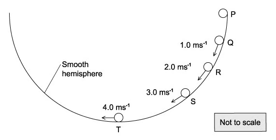
The mass loses potential energy \(E\) in falling from P to T.
At which point has the mass lost potential energy \(\frac{E}{4}\)?
A. Q
B. R
C. S
D. none of these
Show answer and explanation
Answer: B. From conservation of energy, the speed squared is proportional to the potential energy lost. At T, \(v^2=16\), so losing \(\frac{1}{4}E\) means \(v^2=4\), i.e. \(v=2.0\ \mathrm{m\,s^{-1}}\), which occurs at point R.Example 10 · 5.1 MC Hard Q3
A wind turbine has blades that sweep an area of \(2000\ \mathrm{m^2}\). It converts the power available in the wind to electrical power with an efficiency of 50%.
What is the electrical power generated if the wind speed is \(10\ \mathrm{m\,s^{-1}}\)? (The density of air is \(1.3\ \mathrm{kg\,m^{-3}}\).)
A. 130 kW
B. 650 kW
C. 1300 kW
D. 2600 kW
Show answer and explanation
Answer: B. Power available in the wind \(=\frac{1}{2}\rho Av^3=\frac{1}{2}\times1.3\times2000\times10^3=1.3\times10^6\ \mathrm{W}\). Electrical output \(=0.50\times1.3\times10^6=650\ \mathrm{kW}\).5.2 Gravitational Potential Energy & Kinetic Energy - Easy
Example 11 · 5.2 MC Easy Q1
What is the approximate kinetic energy of an Olympic athlete when running at maximum speed during a 100 m race?
A. 400 J
B. 4000 J
C. 40 000 J
D. 400 000 J
Show answer and explanation
Answer: B. An athlete of mass about 80 kg running at about \(10\ \mathrm{m\,s^{-1}}\) has \(E_K=\frac{1}{2}\times80\times10^2=4000\ \mathrm{J}\).Example 12 · 5.2 MC Easy Q2
A body travelling with a speed of \(10\ \mathrm{m\,s^{-1}}\) has kinetic energy 1500 J.
If the speed of the body is increased to \(40\ \mathrm{m\,s^{-1}}\), what is its new kinetic energy?
A. 4.5 kJ
B. 6 kJ
C. 24 kJ
D. 1350 kJ
Show answer and explanation
Answer: C. \(E_K\propto v^2\). The speed increases by a factor of 4, so the kinetic energy increases by a factor of \(4^2=16\): \(1500\times16=24\,000\ \mathrm{J}=24\ \mathrm{kJ}\).Example 13 · 5.2 MC Easy Q3
An object is thrown into the air.
Which graph shows how the potential energy \(E_P\) of the object varies with height \(h\) above the ground?
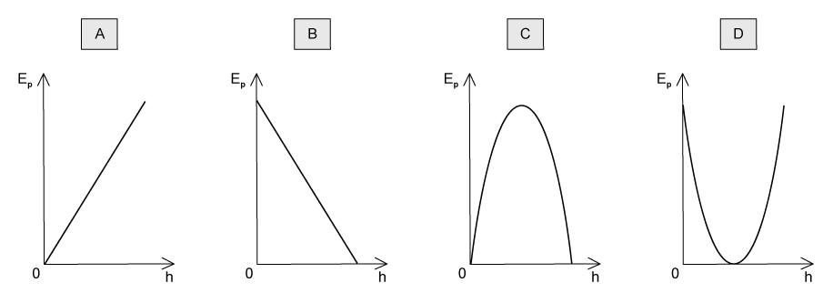
Show answer and explanation
Answer: A. Gravitational potential energy is \(E_P=mgh\), which increases linearly with height, so the graph is a straight line through the origin.Example 14 · 5.2 MC Easy Q9
A cyclist is travelling at a constant speed up a hill. The frictional force resisting the cyclist’s motion is 8.0 N.
The cyclist uses 450 J of energy to travel 20 m.
What is the increase in gravitational potential energy of the cyclist?
A. 160 J
B. 290 J
C. 440 J
D. 610 J
Show answer and explanation
Answer: B. Work done against friction \(=8.0\times20=160\ \mathrm{J}\). By conservation of energy, \(450=160+\Delta E_P\), so \(\Delta E_P=290\ \mathrm{J}\).5.2 Gravitational Potential Energy & Kinetic Energy - Medium
Example 15 · 5.2 MC Medium Q2
A body travelling with a speed of \(20\ \mathrm{m\,s^{-1}}\) has kinetic energy \(E\).
If the speed of the body is increased to \(80\ \mathrm{m\,s^{-1}}\), what is its kinetic energy?
A. \(4E\)
B. \(8E\)
C. \(12E\)
D. \(16E\)
Show answer and explanation
Answer: D. The speed increases by a factor of 4, so the kinetic energy increases by a factor of \(4^2=16\).Example 16 · 5.2 MC Medium Q7
A steel ball is falling at constant speed in oil.
Which graph shows the variation with time of the gravitational potential energy \(E_P\) and the kinetic energy \(E_K\) of the ball?
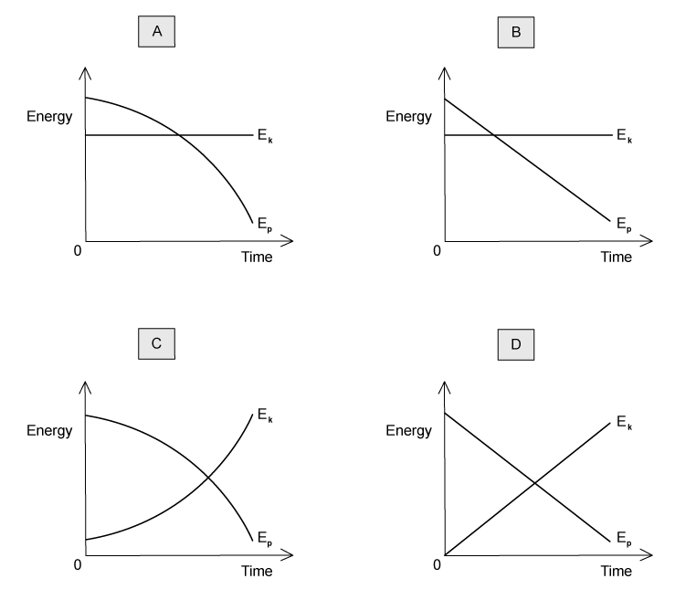
Show answer and explanation
Answer: B. At constant speed the kinetic energy is constant, while the gravitational potential energy decreases linearly with time as the ball falls.Example 17 · 5.2 MC Medium Q8
Car X is travelling at half the speed of car Y. Car X has twice the mass of car Y.
Which statement is correct?
A. Car X has half the kinetic energy of car Y.
B. Car X has one quarter of the kinetic energy of car Y.
C. Car X has twice the kinetic energy of car Y.
D. The two cars have the same kinetic energy.
Show answer and explanation
Answer: A. With \(m_X=2m\) and \(v_X=\frac{1}{2}v\), \(E_X=\frac{1}{2}(2m)(\frac{1}{2}v)^2=\frac{1}{4}mv^2\), which is half of \(E_Y=\frac{1}{2}mv^2\).5.2 Gravitational Potential Energy & Kinetic Energy - Hard
Example 18 · 5.2 MC Hard Q1
A loaded aeroplane has a total mass of \(1.2\times10^5\ \mathrm{kg}\) while climbing after take-off. It climbs at an angle of \(23^\circ\) to the horizontal with a speed of \(50\ \mathrm{m\,s^{-1}}\).
What is the rate at which it is gaining potential energy at this time?
A. \(2.3\times10^6\ \mathrm{J\,s^{-1}}\)
B. \(2.5\times10^6\ \mathrm{J\,s^{-1}}\)
C. \(2.3\times10^7\ \mathrm{J\,s^{-1}}\)
D. \(2.5\times10^7\ \mathrm{J\,s^{-1}}\)
Show answer and explanation
Answer: C. Vertical component of speed \(=50\sin23^\circ\). Rate of gaining GPE \(=mgv\sin\theta=1.2\times10^5\times9.81\times50\times\sin23^\circ=2.3\times10^7\ \mathrm{J\,s^{-1}}\).Example 19 · 5.2 MC Hard Q3
A steel sphere is dropped vertically onto a horizontal metal plate. The sphere hits the plate with a speed \(u\), leaves it at a speed \(v\), and rebounds vertically to half of its original height.
Which expression gives the value of \(\frac{v}{u}\)?
A. \(\frac{1}{2^2}\)
B. \(\frac{1}{2}\)
C. \(\frac{1}{\sqrt{2}}\)
D. \(1-\frac{1}{\sqrt{2}}\)
Show answer and explanation
Answer: C. Before impact \(u^2=2gh\); after rebound \(v^2=2g(h/2)=gh\). Hence \(\frac{v}{u}=\sqrt{\frac{gh}{2gh}}=\frac{1}{\sqrt{2}}\).Example 20 · 5.2 MC Hard Q7
A 4 kg ball and a 3 kg block of wood were placed in an arrangement as shown below. When the ball was released, it fell through a distance of 5 m, pulling the block of wood up the ramp.
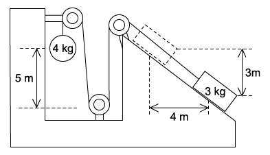
If the pulleys were well oiled and the surface of the ramp exerts a frictional force of 2 N, what is the final speed of the sphere after falling through the 5 m?
A. \(5.0\ \mathrm{m\,s^{-1}}\)
B. \(5.3\ \mathrm{m\,s^{-1}}\)
C. \(6.9\ \mathrm{m\,s^{-1}}\)
D. \(10.0\ \mathrm{m\,s^{-1}}\)
Show answer and explanation
Answer: B. Energy lost by the 4 kg ball is used to gain GPE of the 3 kg block, to overcome friction and to provide kinetic energy of the system. Using the dimensions in the diagram, the energy balance gives \(\frac{1}{2}(4+3)v^2=4g\times5-3g\times3-2\times5\), so \(v=5.3\ \mathrm{m\,s^{-1}}\).Structured Questions
5.1 Energy Conservation - Easy
Example 1 · 5.1 SQ Easy Q1
(a) A small child does work on a large suitcase by pushing it along a smooth floor, as shown in Fig. 1.1.
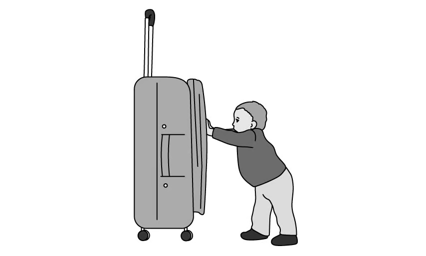
State the definition of work done and write the equation. [2 marks]
(b) The suitcase is moved back to its original position by an adult who pulls it at an angle of \(70^\circ\) to the floor, as shown in Fig. 1.2.
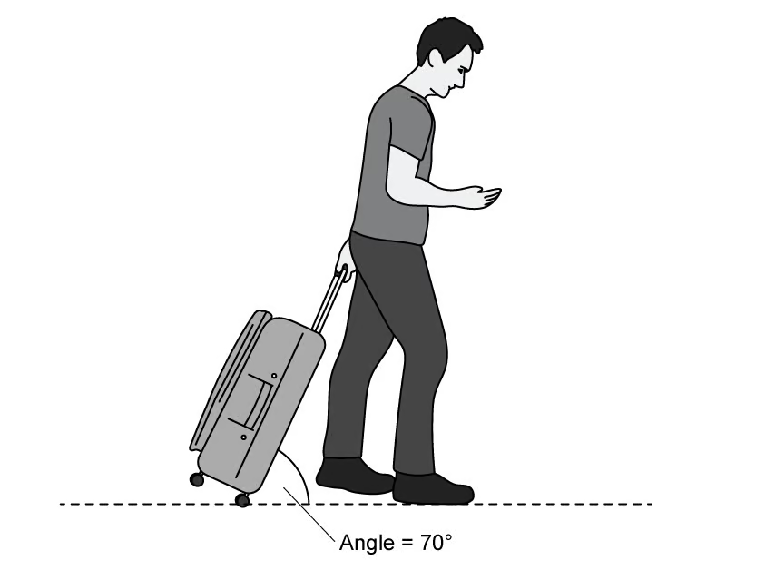
Write an expression for the work done on the suitcase by the adult in terms of force \(F\), distance \(d\) and the angle \(70^\circ\). [2 marks]
(c) In moving the suitcase the child and adult both exerted equal forces of 20 N. They each move the suitcase a distance of 2.5 m.
Calculate the work done by:
(i) the child; [2]
(ii) the adult. [2]
[4 marks]
(d) State whether the child or the adult are more efficient at moving the suitcase, explaining your reasoning. [3 marks]
Show mark scheme / model answer
- (a) Work done is force multiplied by the distance moved in the direction of the force: \(W=F\times d\).
[2] - (b) Only the horizontal component of the pull does work: \(W=Fd\cos70^\circ\).
[2] - (c)(i) Child: \(W=20\times2.5=50\ \mathrm{J}\).
[2] - (c)(ii) Adult: \(W=20\times2.5\times\cos70^\circ=17\ \mathrm{J}\).
[2] - (d) The adult is more efficient because less work (or energy) is needed to move the suitcase the same distance;
[2]the adult’s force is partly vertical, so less energy is wasted (or the wheels reduce friction with the floor).[1]
Example 2 · 5.1 SQ Easy Q2
A block of weight \(4.25\times10^3\ \mathrm{N}\) is placed on a frictionless slope inclined at \(30^\circ\) to the horizontal as shown in Fig. 1.1.
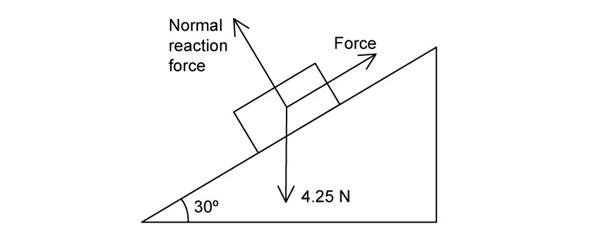
The block is moved up the slope at constant speed by applying a force parallel to the slope.
(a) Calculate the component of the weight of the block which acts parallel to the slope. [2 marks]
(b) Calculate the work done in moving the block a distance of 6.0 m up the slope. [2 marks]
(c) The block in part (a) is pushed 6.0 m up the slope in 18 s.
Calculate the power needed to move the block in this amount of time. [2 marks]
Show mark scheme / model answer
- (a) Component parallel to slope \(=W\sin30^\circ=4.25\times10^3\times0.5=2.1\times10^3\ \mathrm{N}\).
[2] - (b) Work done \(=F s=2.1\times10^3\times6.0=1.28\times10^4\ \mathrm{J}\).
[2] - (c) Power \(=W/t=1.28\times10^4/18=708\ \mathrm{W}\).
[2]
Example 3 · 5.1 SQ Easy Q3
A beaker is filled with ice and then an electric heater is placed into it, as shown in Fig. 1.1. The heater is turned on and heats up until it glows red.
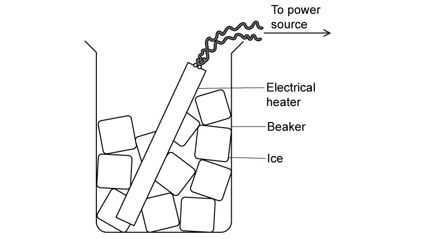
A student states that when the ice is being heated up the total amount of energy in the ice remains the same.
(a) State the principle of conservation of energy. [2 marks]
(b) Explain whether the student is correct, giving your reason. [3 marks]
Show mark scheme / model answer
- (a) Energy cannot be created or destroyed, but it can be transferred from one form to another.
[2] - (b) The student is not correct.
[1]Energy is transferred from the electrical supply to the heater,[1]and then to the ice as thermal energy, so the energy of the ice increases.[1]
5.1 Energy Conservation - Medium
Example 4 · 5.1 SQ Medium Q1
(a) Define work done by a force. [1 mark]
(b) A heavy bag is pulled across a rough surface at a constant speed.
Describe and explain how work is done in this situation. [2 marks]
(c) A crane is used to lift the bag from the ground onto the loading area of a truck.
Fig. 1.1 shows the crane moving the bag from the ground to the truck.
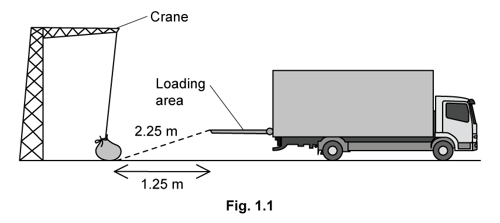
The mass of the bag is 64 kg. The crane takes 0.1 minutes to lift the bag from the ground to the loading area of the truck.
Calculate the rate of work done by the crane when moving the bag. [3 marks]
(d) The crane is powered using an electric motor. The efficiency of the crane is 74%.
The crane is used to load approximately 400 bags with an average mass of 60 kg each day.
(i) Calculate the power used by the crane’s motor to lift the bag in part (c). [3]
(ii) The typical working efficiency of a crane is 80%.
Explain how the difference in efficiency may affect the number of bags the crane can lift in a day. [2]
(iii) Suggest one change which could increase the efficiency of the motor and explain how it would achieve this. [2]
[6 marks]
Show mark scheme / model answer
- (a) Work done is force multiplied by the displacement in the direction of the force.
[1] - (b) Work is done against friction between the bag and the ground,
[1]transferring energy to thermal energy of the bag and the surface.[1] - (c) Vertical height lifted: \(\Delta h=\sqrt{2.25^2-1.25^2}=1.871\ \mathrm{m}\).
[1]Work done \(=mg\Delta h=64\times9.81\times1.871=1175\ \mathrm{J}\).[1]Power \(=1175/6=196\approx200\ \mathrm{W}\).[1] - (d)(i) Motor power \(=200/0.74=270\ \mathrm{W}\).
[3] - (d)(ii) At higher efficiency less input energy is needed for the same useful work.
[1]At 80% the motor needs \(120\ \mathrm{J}\) less per bag, so over 400 bags it saves \(48\,000\ \mathrm{J}\), equivalent to about 44 extra bags per day.[1] - (d)(iii) Lubricate or oil the moving parts,
[1]which reduces energy losses due to friction and heat.[1](Alternative: tighten loose parts to reduce losses due to sound and vibration.)
Example 5 · 5.1 SQ Medium Q2
(a) Engineers around the world are working on ways to provide enough energy to sustain human activity. Off-shore wind farms use the kinetic energy of strong offshore winds to generate electricity.
Fig. 1.1 shows an offshore wind power installation.
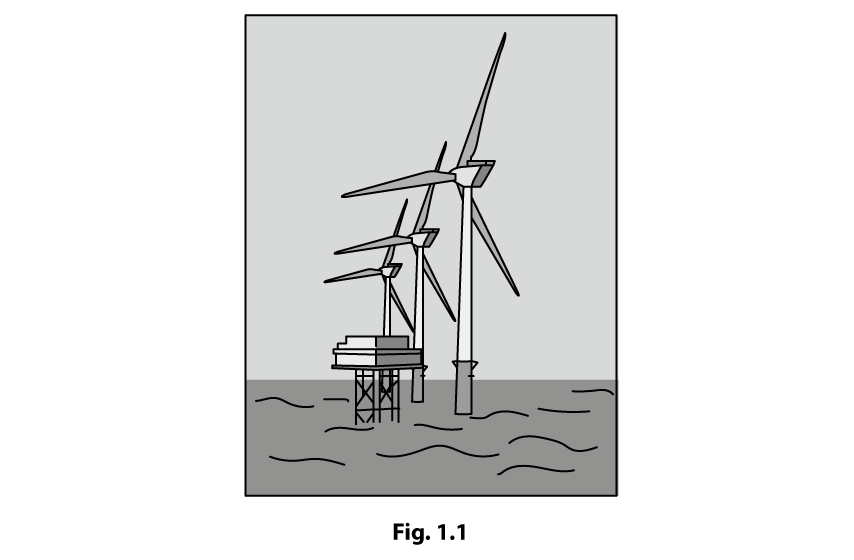
State the definition of power and give the units used to measure power output. [1 mark]
(b) The UK is a world leader in the installation of offshore wind power.
Located in the North Sea off the east coast of England, the Hornsea Phase 2 offshore wind farm was the largest wind farm in the world when it opened in 2022. It uses 165 turbines rated at 8 MW each, to generate 1.4 GW of energy, enough to supply more than 1.3 million homes. Each turbine has blades of length 81 m.
The power output of a single turbine can be calculated using
\[P=\frac{1}{2}\rho Av^3,\]
where \(\rho\) is the density of the air, \(A\) is the area swept out by the blades and \(v\) is the wind speed.
Calculate the average wind speed at Hornsea Two. The density of air is \(1.225\ \mathrm{kg\,m^{-3}}\). [3 marks]
(c) The Hornsea wind turbines are found to have an efficiency of 40%.
(i) Calculate the energy required from the wind every second to achieve the desired power output. [2]
(ii) Explain why it is impossible to transfer all the energy available from the wind. [3]
[5 marks]
Show mark scheme / model answer
- (a) Power is the rate of transfer of energy (or the rate of doing work); the unit is the watt (W).
[1] - (b) Area swept \(A=\pi r^2=\pi(81)^2=20\,600\ \mathrm{m^2}\).
[1]Rearranging \(P=\frac{1}{2}\rho Av^3\) gives \(v=\sqrt[3]{\frac{2P}{\rho A}}=\sqrt[3]{\frac{2\times8\times10^6}{1.225\times20\,600}}\).[1]\(v=8.6\ \mathrm{m\,s^{-1}}\).[1] - (c)(i) Power input \(=1.4\times10^9/0.40=3.5\times10^9\ \mathrm{J}\) per second.
[2] - (c)(ii) The wind’s energy is in the form of kinetic energy.
[1]To extract all of it the wind would have to stop moving,[1]which would prevent further air from reaching the turbine.[1]
Example 6 · 5.1 SQ Medium Q3
(a) A hybrid electric bike is fitted with both pedals and a battery. The cyclist can use pedals only, pedals and battery, or battery only as they ride. Fig. 1.1 shows a cyclist riding a hybrid electric bike up an inclined road.
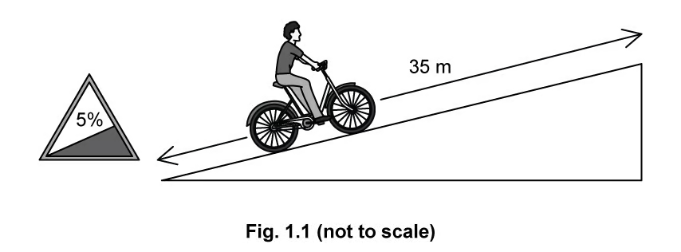
At one hill the cyclist switches to battery only. A road sign at the base of the hill states that it has an incline of 5%, meaning that for every 100 m travelled horizontally, the height increases by 5 m.
The bike travels at a steady speed of \(6.0\ \mathrm{m\,s^{-1}}\).
The mass of the rider and bike combined is 72.8 kg. The distance from the base to the top of the hill is 35 m.
Calculate the minimum power required from the battery. Assume that there is no energy loss due to friction. [5 marks]
(b) Near the top of the hill, the cyclist stops pedalling and the bicycle freewheels for 1.6 s until coming to a stop.
The frictional forces which slow down the motion are constant.
(i) Show that the bicycle travels about 5 m before coming to a stop. [2]
(ii) Calculate the magnitude of the frictional force which slows the bicycle down. [3]
[5 marks]
(c) Once the cyclist reaches the top, they turn off the motor and head back down to the bottom. At the bottom of the hill, they reach a velocity of \(8.8\ \mathrm{m\,s^{-1}}\).
(i) Calculate the energy the cyclist has at the top of the hill. [2]
(ii) Calculate the energy the cyclist has at the bottom of the hill. [2]
(iii) Compare the two values you have calculated and suggest a reason for the difference. [3]
[7 marks]
Show mark scheme / model answer
- (a) Angle of incline: \(\theta=\tan^{-1}(5/100)=2.86^\circ\).
[1]Force parallel to slope \(=mg\sin\theta=72.8\times9.81\times\sin2.86^\circ=35.6\ \mathrm{N}\).[1]Height gained in 35 m: \(35\sin2.86^\circ=1.75\ \mathrm{m}\).[1]Power \(=Fv=35.6\times6.0=213.6\ \mathrm{W}\).[2] - (b)(i) Average speed during freewheeling \(=(6.0+0)/2=3.0\ \mathrm{m\,s^{-1}}\); distance \(=3.0\times1.6=4.8\ \mathrm{m}\approx5\ \mathrm{m}\).
[2] - (b)(ii) Deceleration \(a=(0-6.0)/1.6=3.75\ \mathrm{m\,s^{-2}}\).
[1]Frictional force \(=ma=72.8\times3.75=273\ \mathrm{N}\).[2] - (c)(i) GPE at top \(=mg\Delta h=72.8\times9.81\times1.75=1250\ \mathrm{J}\).
[2] - (c)(ii) KE at bottom \(=\frac{1}{2}mv^2=\frac{1}{2}\times72.8\times8.8^2=2820\ \mathrm{J}\).
[2] - (c)(iii) The energy at the bottom is larger than at the top.
[1]The cyclist has done work (pedalling or battery energy) during the descent,[1]and/or frictional losses are smaller than the input energy.[1]
Example 7 · 5.1 SQ Medium Q4
Fig. 1.1 shows a ride at a water park. Customers are seated in a circular glider which is subject to an accelerating force at point A.
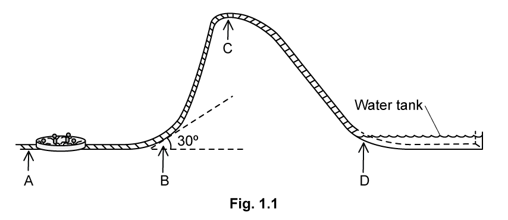
The first part of the ride is horizontal. In this section, the glider is accelerated from rest at point A to \(30\ \mathrm{m\,s^{-1}}\) at point B. At point B, the track is angled at \(30^\circ\) to the horizontal for 2.5 m.
The total mass of the glider and passengers is 350 kg.
(a) Calculate the work done by the glider against gravity when it travels through point B. [3 marks]
(b)
(i) Calculate the maximum height above A that the passengers and glider could reach. [3]
(ii) Point C is 28 m above A.
Suggest why the ride is built to this height instead of the maximum height calculated in (i). [1]
[4 marks]
(c) At point C, the glider stops momentarily before sliding down the incline until it lands in the water pool at point D with a speed of \(22\ \mathrm{m\,s^{-1}}\).
Determine the efficiency of the energy transfer between points C and D. [3 marks]
(d) Once the glider reaches point D, the water applies a decelerating force until it comes to a stop after 8.5 m.
Calculate the decelerating force exerted on the glider by the water. State any assumptions you made in your calculation. [3 marks]
Show mark scheme / model answer
- (a) \(W=mgs\cos\theta=350\times9.81\times2.5\times\cos30^\circ\).
[2]\(W=7434=7400\ \mathrm{J}\) (2 s.f.).[1] - (b)(i) \(\frac{1}{2}mv^2=mg\Delta h\), so \(\Delta h=v^2/(2g)=30^2/(2\times9.81)\).
[2]\(\Delta h=45.87\approx46\ \mathrm{m}\).[1] - (b)(ii) The ride is built lower than the maximum height for safety, or because energy losses make the theoretical maximum unattainable.
[1] - (c) GPE at C \(=350\times9.81\times28=9.61\times10^4\ \mathrm{J}\); KE at D \(=\frac{1}{2}\times350\times22^2=8.47\times10^4\ \mathrm{J}\).
[2]Efficiency \(=8.47/9.61=88\%\).[1] - (d) Deceleration \(a=v^2/(2s)=22^2/(2\times8.5)=28.5\ \mathrm{m\,s^{-2}}\).
[1]Force \(=ma=350\times28.5\approx9800\ \mathrm{N}\).[1]Assumption: the decelerating force (or acceleration) is constant.[1]
Example 8 · 5.1 SQ Medium Q5
Pumped hydroelectric systems store large bodies of water behind a dam. When electricity is needed in the grid, the dam is lifted, allowing water to flow from the upper reservoir.
One such power station, known as the Cruachan power station, is shown in Fig. 1.1. This facility has been producing hydroelectric power since 1965.
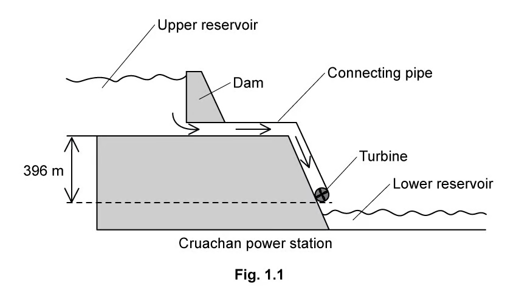
The vertical distance between the base of the upper reservoir and the turbine is 396 m. This arrangement allows Cruachan power station to produce a power output of 0.62 GW with an efficiency of 76%.
(a) Determine the energy transferred by the water each second in order to achieve this power output. [2 marks]
(b) Water is made to flow out of the upper reservoir through connecting pipes at a rate of \(200\ \mathrm{m^3}\) per second. The density of water is \(1.0\times10^3\ \mathrm{kg\,m^{-3}}\).
(i) Use this flow rate to determine the energy transferred by the water each second. [4]
(ii) Explain why this value is not consistent with the energy transfer rate calculated in (a). [1]
[5 marks]
(c) Estimate the depth of the water held in the upper reservoir. State any assumptions made. [3 marks]
Show mark scheme / model answer
- (a) Power input \(=0.62/0.76=0.816\ \mathrm{GW}\).
[1]Energy transferred each second \(=0.82\ \mathrm{GJ}=8.2\times10^8\ \mathrm{J}\).[1] - (b)(i) Mass flow rate \(=200\times1.0\times10^3=2.0\times10^5\ \mathrm{kg\,s^{-1}}\).
[1]Energy per second \(=\dot{m}g\Delta h\).[1]\(=2.0\times10^5\times9.81\times396\).[1]\(=7.8\times10^8\ \mathrm{J\,s^{-1}}\).[1] - (b)(ii) The value differs because the effective head is less than 396 m, or because some energy is lost in the pipes and turbine.
[1] - (c) Let the depth be \(h\). Equating the energy available with the required input gives an estimate of the depth, assuming the full 396 m head and no losses in the pipe.
[2]The calculation gives a depth of the order of a few tens of metres, depending on the assumptions used.[1]
Chapter checklist
Original question PDFs
- 5.1 Energy, Conservation, Work, Power & Efficiency - MC Easy
- 5.1 Energy, Conservation, Work, Power & Efficiency - MC Medium
- 5.1 Energy, Conservation, Work, Power & Efficiency - MC Hard
- 5.1 Energy, Conservation, Work, Power & Efficiency - SQ Easy
- 5.1 Energy, Conservation, Work, Power & Efficiency - SQ Medium
- 5.2 Energy, GPE & KE - MC Easy
- 5.2 Energy, GPE & KE - MC Medium
- 5.2 Energy, GPE & KE - MC Hard